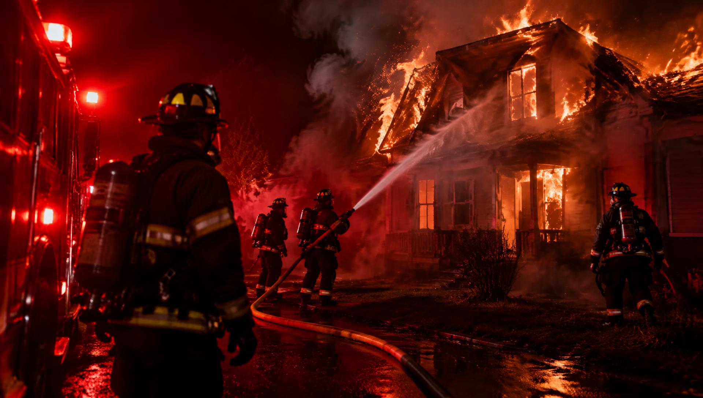

IncêndioIncêndio em casa, no vizinho ou em prédio público
- Prevenção: instale detectores de fumaça, não sobrecarregue tomadas (“benjamins”), mantenha fósforos longe de crianças, nunca deixe panela no fogo sem supervisão e feche o registro do gás ao sair.
- Ao perceber o fogo, avise todos e saia imediatamente. Não pare para pegar objetos.
- Fumaça mata mais que chamas: ande abaixado, perto do chão, cobrindo nariz e boca com pano úmido.
- Antes de abrir uma porta, toque-a com o dorso da mão. Se estiver quente, não abra — procure outra saída.
- Em prédios, use sempre as escadas, nunca o elevador. Feche portas atrás de você para retardar o fogo.
- Se ficar preso, vede frestas com panos molhados, vá até a janela e sinalize. Ligue 193.
- No vizinho: chame os bombeiros, alerte os moradores e afaste-se. Nunca volte para dentro de um local em chamas.